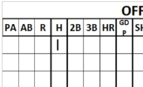
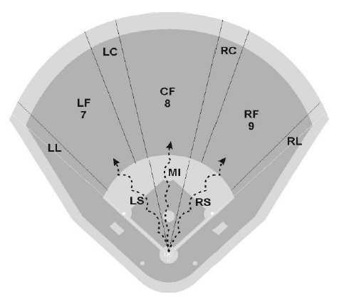
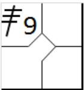
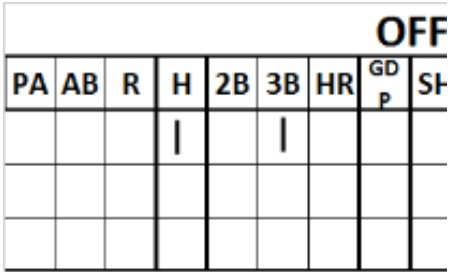
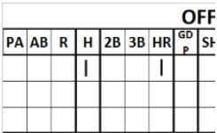
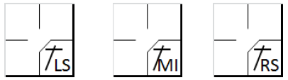
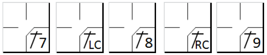
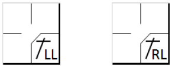
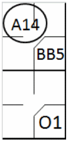

Nous commencerons ce chapitre par la description des symboles utilisés pour représenter les coups sûrs.
Le signe d'un coup sûr doit être suivi d'un chiffre identifiant la zone d'un joueur défensif proche de l'endroit où la balle a été récupérée ou s'est immobilisée, ou de lettres identifiant la zone sur le terrain.
Nous définissons les coups sûrs en différentes catégories:

Les symboles pour les coups sûrs sont les suivants :
|
|
Coup sûr à une base (à enregistrer dans la case de la première base). |
 |

|
Coup sûr à deux bases (à inscrire dans la case de la deuxième base). |

|
|
 |
Coup sûr à trois bases (à enregistrer dans la case de la troisième base). |
 |

|
Coup sûr de quatre bases ou homerun (à inscrire dans la case du marbre). Si le frappeur marque un homerun sans envoyer la balle hors du jeu, inscrivez IHR suivi de la position (p. ex. IHR8). |
 |
Lorsqu'un coup sûr est attribué au frappeur, il doit également être inscrit dans la section du lanceur sur la feuille de pointage.

Pour donner quelques exemples des différentes catégories :





Conformément à la règle 9.05 de l'OBR, Le scoreur officiel créditera un coup sûr quand :
Dans les descriptions des coups sûrs, nous avons introduit un concept fondamental : l’effort normal d’un défenseur. Effort qu'un défenseur d'habileté moyenne à une position, dans un championnat ou à un niveau de compétition donné, devrait faire lors d’un jeu, eu égard à l’état du terrain et aux conditions météorologiques. [Définition des termes OBR Effort ordinaire] Cette norme, mentionnée à plusieurs reprises dans les règles officielles de scorage (par exemple, règles 9.05(a)(3), 9.05(a)(4), 9.05(a)(6), 9.05(b)(3)(Coups sûrs) ; 9.08(b)(Sacrifices) ; 9.12(a)(1) Commentaire, 9.12(d)(2) Erreurs ; et 9.13(a), 9.13(b)(Lancers fous et balles passées)) et dans les règles officielles du baseball (par exemple, Définition des termes - infield fly)), est une norme objective en ce qui concerne tout joueur défensif particulier.
Autrement dit, même si un joueur de champ fait de son mieux, si cet effort est inférieur à celui qu'aurait fourni un défenseur moyen à ce poste et dans cette ligue dans une situation donnée, le scoreur officiel devrait lui imputer une erreur. [Commentaire sur la définition des termes de l'OBR]. Il convient de préciser d'emblée qu'il s'agit d'un concept très flexible, susceptible de varier d'un scoreur à l'autre. Nous nous efforcerons donc de fournir des indications basées sur les règles elles-mêmes et sur l'expérience.
Il est recommandé, en premier lieu, de ne pas exiger la perfection absolue de la défense : en cas de prestation particulièrement difficile, privilégiez un hit réussi plutôt qu’une faute. Le scoreur se contentera d’enregistrer les actions telles qu’elles se sont déroulées, laissant au manager le soin de juger les joueurs pour une réaction trop tardive ou un déplacement trop lent. Il faut également garder à l’esprit que les balles sont souvent frappées avec une grande force, ce qui les rend extrêmement difficiles à maîtriser.
Un facteur crucial influençant la réussite d'un coup sûr est le positionnement défensif des joueurs avant la frappe. Ce positionnement détermine la difficulté de l'action. De toute évidence, une balle sera plus difficile à attraper si les joueurs sont plus proches, compte tenu de sa vitesse plus élevée. Avant toute action, il est donc essentiel d'observer attentivement le positionnement des joueurs défensifs.
Aucune faute ne doit être imputée à un joueur défensif qui perd du temps à feinter ou à se retourner vers une autre base, même si, de l'avis du scoreur, un retrait en première base aurait été plus facile et plus sûr. De plus, aucun article du règlement ne prévoit qu'une faute soit imputée à un joueur défensif extérieur si la balle rebondit devant lui et au-dessus de sa tête.
C’est facile à comprendre, car il n’a pas pu toucher la balle au premier rebond, n’étant pas assez près, et il n’a pas pu la rattraper après qu’elle ait rebondi.
De plus, il existe certaines situations pour lesquelles il est conseillé de bien réfléchir avant de signaler une erreur. Examinons-les.:
Le lanceur - Au moment de la frappe, le lanceur est encore en phase de redressement après avoir lancé la balle et se penche en avant. De ce fait, une balle passant au-dessus de lui serait très difficile à contrôler, surtout si elle a été frappée fort. Il devient donc difficile d'intercepter la balle et la frappe est par conséquent automatiquement considérée comme valide. Évidemment, ce n'est pas le cas si la frappe est suffisamment lente pour permettre au lanceur de revenir à une position normale à temps pour l'attraper. Pour les raisons évoquées ci-dessus, le lanceur est également le seul joueur exonéré d'erreur si une balle rapide passe entre ses jambes.
Le receveur - La position du receveur diffère de celle des autres joueurs défensifs, ce qui le désavantage dans certaines situations. Un lancer effectué pour empêcher un vol de base n'est pas considéré comme une erreur, à condition que le coureur n'avance pas par la suite. Il peut également arriver qu'il soit difficile de déterminer s'il faut accorder un lancer fou ou une balle passée ; en cas de doute, nous vous suggérons d'accorder un lancer fou, en tenant compte de la gêne occasionnée par certains mouvements pour le receveur.
L'arrêt court - Il est le joueur de champ intérieur qui couvre la plus grande zone. De ce fait, il doit fréquemment effectuer des prises difficiles qui, précisément, ne peuvent être considérées comme des erreurs. Par exemple, une prise latérale, une prise en bordure de terre battue, devant la troisième base ou dos au marbre, doivent toutes être considérées comme difficiles.
Défenseur de la deuxième base - En cas de balle frappée au sol vers la deuxième base, qui peut être attrapée avec un effort ordinaire, et que le joueur défensif ne parvient pas à attraper, une erreur sera comptabilisée en l'absence de tout mouvement latéral évident et pertinent de la part du défenseur.
Défenseur de la troisième base - La zone où évolue le joueur de troisième base est celle où
atterrissent la majorité des balles frappées champ intérieur, et où elles sont les plus rapides. De ce fait, nombre de ces
balles sont difficiles à contrôler, compte tenu de leur vitesse, surtout si elles rebondissent avant d'atteindre la zone
de la troisième base. En effet, un rebond peut leur donner une trajectoire inattendue, ce qui complique la prise. Il est
donc essentiel d'évaluer attentivement la vitesse de la balle pour apprécier la difficulté de la prise.
NOTE: Des considérations similaires s'appliquent au défenseur de la première abse lorsque le frappeur est gaucher.
Défenseur du champ extérieur - Si une balle frappée vers les défenseur du champ extérieur rebondit devant un défenseur qui s'est avancé pour l'attraper au vol et passe au-dessus de sa tête, créditez le frappeur d'un coup sûr de deux bases (ou plus), plutôt que d'un simple, et d'une erreur de base supplémentaire.
Un autre concept important à prendre en compte pour évaluer la valeur des coup sûrs est : le scoreur officiel devra toujours donner le bénéfice du doute au batteur. Une bonne façon de procéder est de compter un coup sûr, lorsque, même en jouant de façon exceptionnelle le retrait n'est pas réalisé. [OBR 9.05(a) Commentaire].
AUCUN COUP SURE N'EST attribué, conformément à la règle 9.05(b) de l'OBR lorsqu'un
| WBSC | Transcription dans l'outil de scorage | Outil |
|---|---|---|
|
 |
/* Le premier frappeur gagne la première base sur « Base on ball ». */ action { batter -> BB } /* Le frappeur réussit un coup sûr et le coureur avance. Le coureur ne touche pas sa base et la défense signale un retrait. */ action { batter -> O1 , runner1 -> A14 } |

|
Exemple 2:
Dans ce cas, le scoreur doit porter une attention particulière à la position du coureur-frappeur au moment de
l'interférence, afin de déterminer s'il est possible d'accorder un coup sûr et un retrait. En cas de retrait, le
coureur ayant commis l'interférence est automatiquement retiré, tandis que le scoreur note un choix défensif
pour l'action du batteur-coureur
Dans le premier cas, le coureur a gêné le défenseur de la deuxième base avant d'atteindre cette base. Dans le
second cas, le coureur a franchi la deuxième base pour se rendre en troisième but lorsqu'il a gêné le défenseur de la
troisième base.
| WBSC | Transcription dans l'outil de scorage | Outil |
|---|---|---|

|
/* Le premier frappeur gagne la première base sur « Base on ball » */ action { batter -> BB } /* Interférence avant que le coureur n'atteigne la deuxième base */ action { batter -> O1 , runner1 -> OBR13-4 } |

|

|
/* Le premier frappeur gagne la première base sur « Base on ball » */ action { batter -> BB } /* Interférence après que le coureur ait atteint la deuxième base */ action { batter -> O1 , runner -> + OBR13-5 } |

|